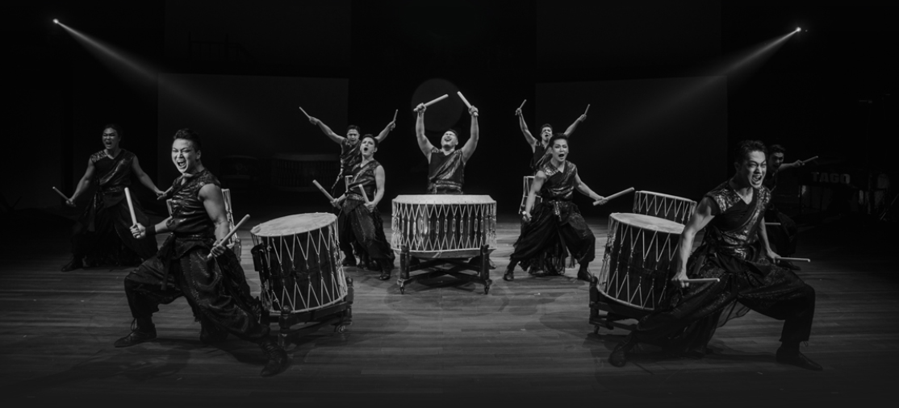
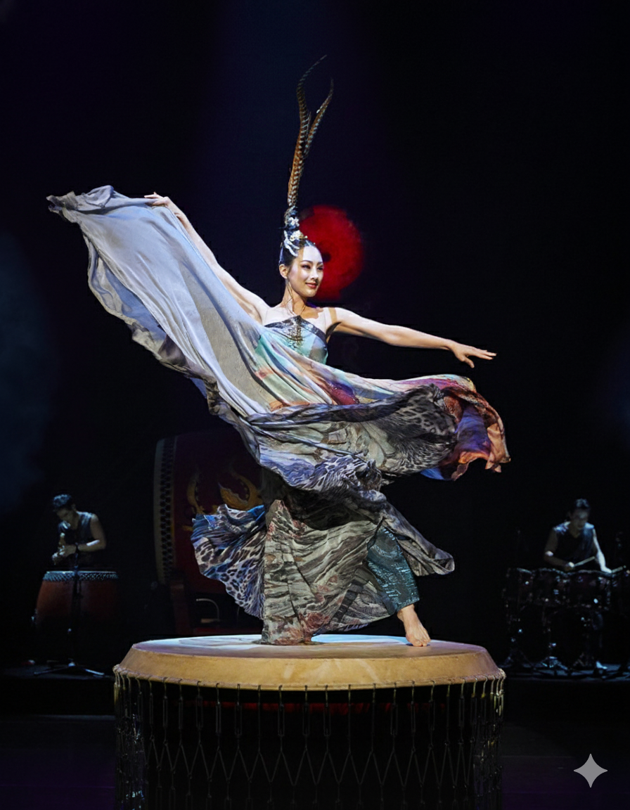

샤머니즘에서 무당은 하늘과 땅을 연결하는 자의 역할을 맡고 있다. 예로부터 무당은 춤사위와 굿판의 음악적인 요소로 하늘에 계신 신과의 소통을 도모했다.
무대와 음악


타고 팀의 공연에서는 북과 타악기 중심의 리듬이 전통적인 의례적 분위기를 형성하는데에 중심적인 역할을 했다. 이는 단순한 음악적 감상뿐만 아니라 관객들까지 의례적 경험에 가까운 몰입에 이르게 했다는 점에서 공연의 핵심 메세지인 '샤머니즘의 현대적 해석'을 관통하는 중추적인 요소였다.
의상

전통적인 무복에서 착안해 상징적인 요소들을 조화롭게 배치한 것으로 보였다. 특히 무녀의 의상이 돋보였다. 얇은 소재의 천을 휘감아 입어 무녀가 움직일 때마다 부드럽게 찰랑거리며 신이라는 영적 존재의 흐름을 잘 나타냈다. 머리 위에는 깃털이라는 전통적인 장신구를 더해 시각적 화려함을 더했다.
이외에도 실제 무복의 구성요소 중 하나인 고깔을 머리 위에 써 주술적인 분위기를 더했다.
전체적으로 의상이 공연의 주제인 샤머니즘을 시각적으로 재현하는 장치로 완벽히 기능했다는 점에서 중요한 의미를 갖는다.